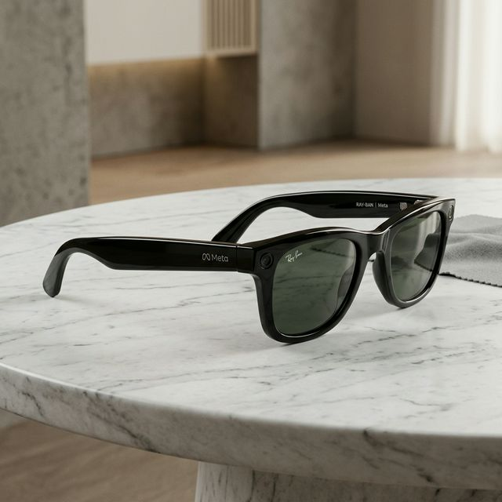

Innovation in every frame.
Ray-Ban Meta smart glasses represent a leap forward in wearable technology. By combining EssilorLuxottica's legendary craftsmanship with Meta's cutting-edge AI and electronics, we've created a device that feels like a classic pair of Ray-Bans but acts like a gateway to the digital world.
Our mission is to help people stay connected to their world without being glued to a screen. With high-fidelity audio, a powerful ultra-wide camera, and the world's first wearable AI, the future is now in sight.
